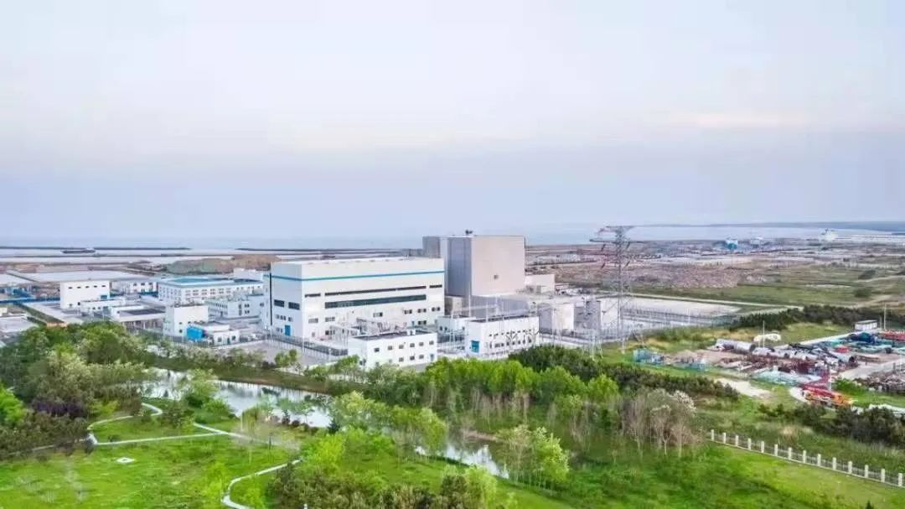

地理位置
中国山东省荣成市
核电厂历史
2012年12月9日，石岛湾高温气冷堆核电站示范工程开工，成为国务院召开常务会议重启核电以来首个正式开工的核电项目，也是“十二五”第一个正式开工的核电项目。直到2014年9月，石岛湾温气冷堆核电站常规岛主体工程开工； 2021年12月20日，华能石岛湾高温气冷堆核电站1号反应堆成功并网发电。2023年12月6日，华能石岛湾高温气冷堆核电站1号反应堆完成168小时连续运行考验，正式投入商业运行，
堆形与数量
截止2024年11月，石岛湾核电厂有一台运作的HTGR高温气冷堆以及两台在建PWR压水堆；国和一号示范工程有一台运作以及一台在建的的PWR压水堆。
发电基本原理
石岛湾核电厂采用高温气冷堆核电机组，国和一号示范工程采用压水堆核电机组以下是简要介绍：
高温气冷堆（High Temperature Gas-cooled Reactor，HTGR）是指具有高温特征、使用气体进行堆芯冷却的核反应堆技术。“高温”是指反应堆堆芯采用石墨等耐高温材料，使得堆芯出口温度可以达到其他堆型难以企及的高度，让它不仅能高效发电， 还能利用高温实现核能综合利用、一举多得。“气冷”是指反应堆采用惰性气体氦气进行堆芯冷却和热传导，而非传统压水堆核电站的“水冷”方式。其工作原理为：氦气会通过主循环泵进入反应堆堆芯，在堆芯内带走核燃料裂变产生的热量。 高温氦气随后进入热交换器，将热量传递给二回路的工质水，使其蒸发并生成高温高压蒸汽。蒸汽推动汽轮机做功，完成能量转换，发电过程由此实现。高温气冷堆堆芯采用球形燃料元件或柱状燃料组件，其燃料颗粒被包覆在耐高温的陶瓷材料中， 这使得整个东西能在高达1000摄氏度的条件下保持稳定。在这一过程中，氦气不仅起到冷却作用，还因其化学惰性，不与其他材料发生反应，有效避免了腐蚀和泄漏风险。高温气冷堆凭借其高效、清洁和固有安全性的优势，成为下一代核能技术发展的重要方向之一。 其工作原理可用如下图表示：
图1：高温气冷堆示意图
压水堆（Pressurized Water Reactor）是采用高压水来冷却核燃料的一种反应堆，其工作原理为：主泵将120～160个大气压的一回路冷却水送入堆芯，把核燃料放出的热能带出堆芯，而后进入蒸汽发生器， 通过传热管把热量传给二回路水，使其沸腾并产生蒸汽，常在一回路水中加入硼酸，用以控制反应性的慢变化。之后，二回路产生的高压蒸汽会推动汽轮机发电，再经过冷凝器和预热器进入蒸汽发生器，完成二回路水循环。 压水堆的工作原理图如下所示：

图2：压水堆示意图
荣誉与贡献
石岛湾截止目前已为山东地区供电超10亿度，是山东地区能源一颗璀璨的明珠。除此之外，石岛湾核电厂作为世界上首座投入商业运行的第四代核电站，其影响力已跨越国界。其展现出的技术实力和高效能，赢得了国际社会的广泛认可，为中国核电技术赢得了国际声誉。
图3：石岛湾核电厂全景
石岛湾核电厂属于第几代核电站？
参考文献
1. 俞冀阳.核工程基本原理.北京：清华大学出版社，2018
2. 俞冀阳.核电厂系统与运行.北京：清华大学出版社，2016
3. 2024年中国核电行业研究报告，2024
4. 央视新闻.高温气冷堆技术是什么？如何确保核电反应安全性？
5. AP1000反应堆压力容器的制造难点与监造应对措施
6. 王瑞，句宇锋.国和一号压水堆核电站氚排放研究，2021
7. 国家核安全局网站
8. 国家能源局网站